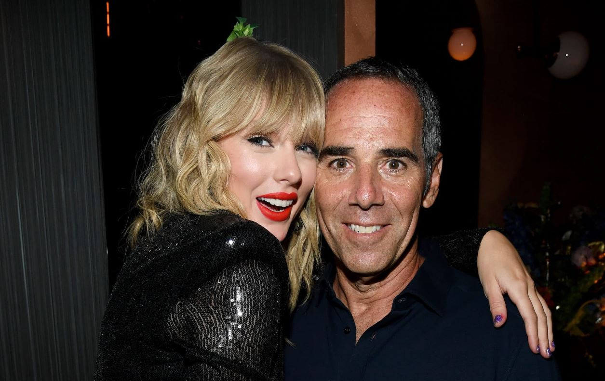

Big Machine Records
A lo largo de su carrera, Taylor Swift ha trabajado con distintas compañías discográficas que marcaron momentos clave en su desarrollo artístico y profesional. Su primera firma fue con el sello Big Machine Records en 2005, cuando apenas tenía 15 años. Con esta compañía lanzó sus seis primeros álbumes de estudio: Taylor Swift (2006), Fearless (2008), Speak Now (2010), Red (2012), 1989 (2014) y Reputation (2017).

Republic Records y Universal Music Group.
Durante esos años, Swift se convirtió en una de las artistas más exitosas del mundo, pero su relación con Big Machine se volvió complicada por temas relacionados con los derechos de sus grabaciones originales (los llamados “masters”). Cuando su contrato finalizó en 2018, decidió no renovarlo, y firmó con Republic Records y Universal Music Group. Este nuevo acuerdo fue histórico porque le garantizó que los derechos de todas sus futuras grabaciones serían completamente suyos, además de permitirle obtener un porcentaje de las ganancias por la venta del catálogo de Universal a Spotify. Este paso significó una mayor independencia creativa y un control total sobre su obra. En esta etapa, Taylor lanzó los álbumes Lover (2019), Folklore (2020), Evermore (2020) y Midnights (2022), además de iniciar su reconocido proyecto de regrabación de álbumes antiguos, bajo el sello Taylor’s Version . La evolución de sus contratos discográficos refleja no solo su crecimiento como artista, sino también su papel como defensora de los derechos de los músicos dentro de la industria.
